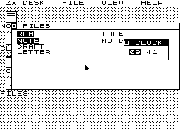
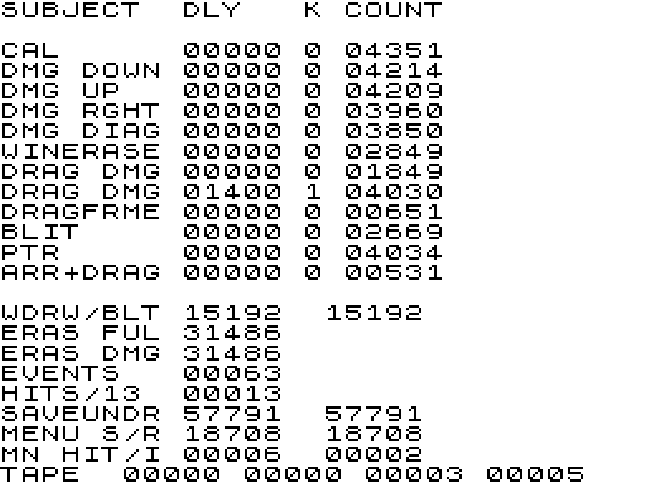

欠着的那两个字节
The Two Bytes He Owes

mindbox77 用 Z80 汇编，为 1982 年的 48K ZX Spectrum 写了一整套图形桌面。可重叠的窗口、z 序与焦点、常驻菜单栏和下拉菜单、十六槽事件环、带 owner 字节的堆、两窗格文件管理器、记事本、时钟、日历，以及一个真的会改变东西的设置面板。全部塞进 48K，并且能在一帧 69,888 个 T 状态之内把一个窗口拖完。跑在真机上，不是模拟器。
动机他写得很朴素：八十年代他想要一台 Atari ST，买不起。他真正想要的是 GEM——那个桌面，那条永远在的菜单栏，"机器是一个地方，而不是一个提示符"的感觉。他手上只有 Spectrum，写了一点，没写完。这是那件事，四十年后写完了。他说这不是 GEM 的移植，也不假装是；这是当那个念头被顶到一颗 3.5 MHz 的 Z80、48K 内存、一块带属性冲突的单比特显示、以及一枚边画边偷 CPU 周期的视频芯片上时，它变成的样子。
但仓库里真正的内容不是桌面。是那份测量日志。
填一块矩形，这台机器上最快的办法是拿 SP 当写指针——Z80 上一次 PUSH 写两个字节，一条 PUSH 链比任何别的搬运方式都快。代价是 SP 不再是栈。教科书的答案只有一条指令：DI，关中断，把这段保护起来。他照做了，然后发现 Spectrum 根本不推迟中断：ULA 把 INT 拉低 32 个 T 状态，然后撤回。一个盖住这 32 T 的 DI 区间不是推迟了中断，是销毁了它。他把中断注入到填充例程的每一条指令边界之后去量：一条例程 500 个边界里 458 个把中断吃掉，另一条 752 里 710。
"临界区"——在不可被打断的代码两端关掉中断——是计算机里已构得最彻底的东西之一。它曾经是一次活的凿削，在六十年代的互斥问题里；它被命名，变成构，此后没人再看见它。而它藏着一个从未被说出口的前提：被挡在外面的那个东西会等。DI 说的是"我现在不在"，这句话只有在世界愿意等的时候才成立。Spectrum 的 ULA 不愿意。它只说一次，32 个 T 状态，说完就走。
所以余项是中断本身的时间形状——消息与窗口的区别。放进队列的消息可以晚一点取，关上的窗口取不回来。临界区这个构从来没给这个区别留位置，因为在它成形的那些机器上，这个区别不存在。
更要紧的是修复的方向。逐行 EI 听上去对，但失败，因为中断不是挂起，是没了——几个 T 状态宽的 EI 窗口大约三十行才接住一次。他写下的那句是整份文档里最硬的一句：把 DI 区间弄短，和让它不存在，不是一回事；只有不存在才算修好。
于是填充现在全程开着中断。DI 当初保护的是 SP，所以真正的修法是保证中断压进去的那两个字节返回地址，一定落在一块马上就要被覆盖掉的地方。PUSH 链被做得比一行短一次，最左边那两个字节被欠着——等到下一行、SP 已经移开再也够不着它们的时候才还。中断不再被排除，它被给了一个可以落脚的地方。凿削变成涵育。代价是每行 48 个 T 状态，他说值。

同样形状的东西在这份仓库里还有一串。他为了抓掉帧写了个看门狗，结果看门狗被它要抓的那个东西抓住了：INC (IX+0) 会改标志位，而填充例程跨行时手里正握着一个活的进位；中断落在那个缝里偷走进位，行地址就走错。路线图本来预言"看门狗会更早抓到中断那个 bug"，实际发生的是中断测试抓到了看门狗。仪器不在系统外面。
还有那个自己把自己修好的堆 bug。free 里多了一个 DEC HL，第一次释放就该把堆毁掉。没有——因为合并器随后读到一段全零的载荷，把那些零当成空闲块，四个字节四个字节吸收回来，最后精确地回到正确的总数。每个数字都对得上。它只在某个被释放的块里装着非零内容时才浮出来，而那是第一个大到装过窗口像素的块。教训不在分配器，在测试：一个只释放从没写过的块的堆测试，测的是零填充。它现在先拿 $A5 写满载荷再释放，并且直接断言头部，而不是通过一个会自愈的总数。
还有一条更朴素的。计时是靠数一个 16 T 的循环到下一次中断，所以越慢的例程留下的圈数越少。他在同一次会话里把这个方向读反了两次，一次把 1,216 T 的开销显示成 76 T 的节省——于是一个真实的性能回退因为被显示成改进而没人发现。还有争了三十年的"屏幕写入要付 50% 竞争代价"：他把一次 1,024 字节的填充扫过整帧，最坏 13,473 T 对无竞争的 11,744 T，是 14.7%，于是他自己此前所有的预算都保守了三分之一。他把这一条写进了文档，包括"我的预算也是错的"。
这些是命名之前的那一刻。"欠掉最后一个 push"在任何一本操作系统书里都没有名字。它还长着它被发现的那台机器的形状，还没被一般化，还没变成一个别人不看就能用的词。等它有了名字，它就好用了、可复制了，作为余项也就死了——它会变成又一层沉淀，和临界区一样，谁都不再看见。它现在活着，恰恰因为你还必须把整段读完才懂。
github.com/mindbox77/zxdesk ↗ hackaday.com ↗mindbox77 has written a complete graphical desktop for the 48K ZX Spectrum, in Z80 assembly, for a machine from 1982. Overlapping windows with a z-order and focus, a permanent menu bar with pull-downs, a sixteen-slot event ring, a heap with an owner byte, a two-pane file manager, a notepad, a clock, a calendar, and a settings panel that actually changes things. All of it fits in 48K, and it can drag a window to completion inside a single 69,888 T-state frame. It runs on the real machine, not an emulator.
His reason is plainly put: in the eighties he wanted an Atari ST and couldn't afford one. What he actually wanted was GEM — the desktop, the menu bar that was always there, the feeling that the machine was a place rather than a prompt. He had a Spectrum instead. He started writing bits of it and never finished. This is that, finished, forty years later. It isn't a port of GEM and doesn't pretend to be; it is what the idea turns into when you push it up against a 3.5 MHz Z80, 48K of RAM, a one-bit display with attribute clash, and a video chip that steals cycles from the CPU while it paints.
But the repository's real content is not the desktop. It is the measurement log.
The fastest way to fill a rectangle on this machine is to use SP as a write pointer — PUSH writes two bytes at a time, and a chain of them moves pixels faster than anything else available. The cost is that SP stops being a stack. The textbook answer is one instruction: DI. Disable interrupts, protect the region. He did that, and then found the Spectrum does not defer interrupts at all. The ULA asserts INT for exactly 32 T states and then withdraws it. A DI window covering those 32 T does not postpone the interrupt; it destroys it. He measured it by injecting an interrupt after every single instruction of a fill: 458 of 500 instruction boundaries refused it in one routine, 710 of 752 in the other.
The critical section — disable interrupts around code that must not be interrupted — is one of the most thoroughly already-construct objects in all of computing. It was a live cut once, in the mutual-exclusion problems of the sixties. It got named. It became construct, and after that nobody saw it again. And it carries a premise it never states: that the thing being kept out will wait. DI means "I am not available right now," which only holds if the world is willing to hold. The Spectrum's ULA is not willing. It speaks once, for 32 T states, and is done.
So the remainder is the temporal shape of the interruption itself — the difference between a message and a window. A message in a queue can be collected late. A window that has closed cannot. The critical section never made room for that difference, because on the machines where it took shape the difference did not exist.
The sharper point is which way the repair runs. Re-enabling interrupts between rows sounds right and fails, because the interrupt is not pending, it is gone — an EI window a few T states wide catches it about one row in thirty. His sentence is the hardest thing in the document: making the DI region short is not the same as making it absent, and only absent is a fix.
So the fills now run with interrupts enabled throughout. What DI was protecting was SP, so the real fix is to guarantee that the two bytes of return address an interrupt pushes always land somewhere that is about to be overwritten anyway. The push chain is made one push shorter than the row, and the leftmost two bytes are owed — paid one row later, once SP has moved on and can no longer reach them. The interrupt is no longer excluded. It is given somewhere to land. Severing becomes cultivation. It costs 48 T states a row, and he says it is worth it.
The repository holds a run of other things with the same shape. He built a frame watchdog to catch dropped frames, and the watchdog was caught by the thing it was built to catch: INC (IX+0) sets the flags, and a fill holds a live carry across the test that decides whether a row has crossed a cell boundary. An interrupt landing in that gap stole the carry and the row stepped to the wrong address. The roadmap had predicted the watchdog would catch the interrupt bug earlier. What happened is that the interrupt test caught the watchdog. The instrument is not outside the system.
Then the heap bug that healed itself. The free routine had one DEC HL too many and should have ruined the heap on the first release. It didn't — because the coalescer then read a zero-filled payload as an empty free block and absorbed it four bytes at a time until it arrived back at exactly the true total. Every number agreed. It only surfaced when a freed block held something other than zeros, which was the first block big enough to have held window pixels. The lesson is not about the allocator but about the test: a heap test that frees blocks it never wrote to is testing a zero fill. It writes $A5 over the payload before freeing now, and asserts on the header directly rather than through a total that can heal.
And one plainer one. Timings are taken by counting a sixteen-T loop until the next interrupt, so a slower routine leaves fewer turns. He read that backwards twice in one session, once reporting a 1,216 T cost as a 76 T saving — so a real regression went unnoticed for being displayed as an improvement. Thirty years of folklore say screen writes pay a 50% contention penalty; he swept a 1,024-byte fill across the whole frame and measured a worst case of 13,473 T against 11,744 T uncontended, which is 14.7%, so every budget he had built was a third too conservative. He put that in the document too, including the part where his own budgets were wrong.
These are the moments before naming. "Owing the last push" has no name in any operating-systems book. It still has the shape of the particular machine it was found on; it has not been generalised, has not become a word people reach for without looking. The day it gets a name it will be useful and repeatable and dead as a remainder — one more layer of sediment, like the critical section, that nobody sees any more. It is alive right now precisely because you still have to read the whole paragraph to understand it.
github.com/mindbox77/zxdesk ↗ hackaday.com ↗